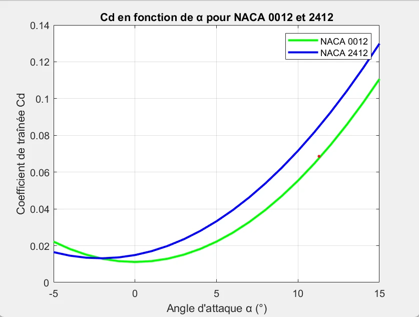
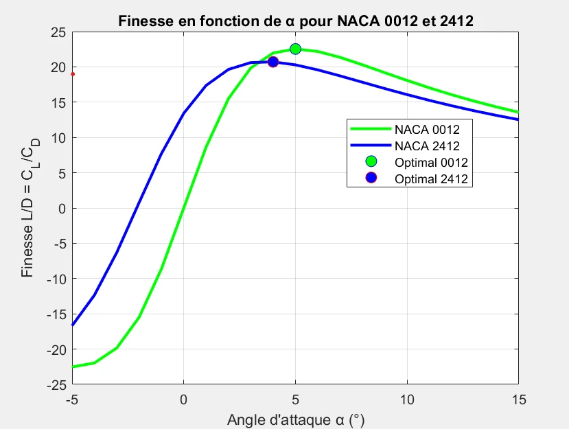

Academic · Aerodynamic modeling
NACA 2412 vs. NACA 0012
Academic project
Project overview
I used MATLAB to compare the aerodynamic coefficients of a cambered NACA 2412 profile and a symmetric NACA 0012 profile.
The aim was to examine how the two profiles behaved as the angle of attack changed.

My contribution
What I did
I developed numerical work in MATLAB to evaluate lift and drag coefficients. I compared the coefficients across angles of attack. I plotted the results to examine the differences between the two profiles.
A closer look
Inside the work


Result
The outcome
A MATLAB study comparing lift, drag and aerodynamic efficiency across angle of attack and Reynolds number.
Methods & tools
- MATLAB
- Numerical modeling
- Lift & drag coefficients